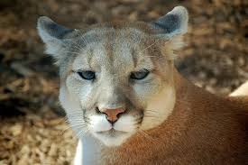
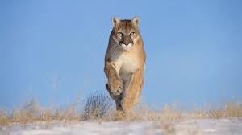

Los animales son seres vivos que habitan en casi todos los rincones del planeta. Se pueden clasificar en diversas categorías, como mamíferos, aves, reptiles, peces e insectos, entre otros. Cada grupo tiene características propias, pero todos desempeñan roles fundamentales en sus ecosistemas. Por ejemplo, los mamíferos como los leones o los elefantes son importantes predadores o presas, mientras que los insectos, como las abejas, son cruciales para la polinización de plantas, lo que ayuda en la producción de alimentos para muchos otros seres vivos.
Los animales también muestran una gran diversidad en sus comportamientos y habilidades. Algunos, como los delfines, son conocidos por su inteligencia, ya que pueden resolver problemas complejos y comunicarse de manera sofisticada entre ellos. Otros, como las aves migratorias, tienen la capacidad de recorrer miles de kilómetros sin perderse, guiándose por el sol, las estrellas o el campo magnético de la Tierra. Además, hay especies que presentan increíbles adaptaciones, como los camaleones que pueden cambiar de color para camuflarse o los osos polares que sobreviven en las extremas temperaturas del Ártico.
Finalmente, los animales han tenido una gran influencia en la cultura humana, siendo parte de mitologías, leyendas y hasta simbolismos. En muchas culturas, los animales son vistos como símbolos de sabiduría, fuerza o libertad. Además, muchas personas mantienen animales como mascotas, lo que les permite establecer vínculos afectivos y disfrutar de su compañía. Sin embargo, es importante recordar que muchos animales están en peligro de extinción debido a la actividad humana, por lo que es esencial tomar medidas para proteger su hábitat y garantizar su supervivencia a largo plazo.